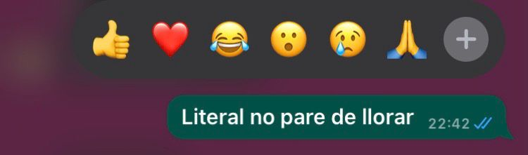
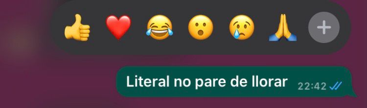
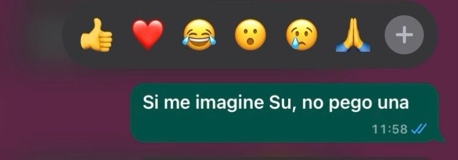
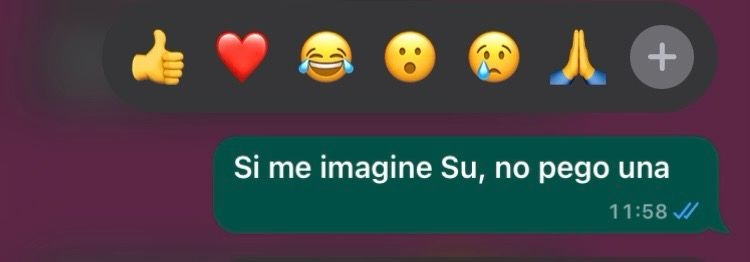

Pilar Cortizo
Tengo 19 años y vivo en La Plata. Actualmente estoy muy feliz por la carrera que elegi, nunca imagine que iba a poder programar, lo veia como algo muy complicado(igual si) pero aprendi muchas cosas este año y quiero seguir desarrollando mis conocimientos porque aunque me ponga mal cuando algo no me sale, me gusta cuando se ven los resoltados del proceso
Como llegue hasta aca?
Mi proceso
Durante este ultimo tiempo donde debi hacer la aventura gráfica y el mini-juego fue el real 'una lloradita y a seguir'. Al ser una persona que se estresa muy facil y que es muy exigente en lo academico, resulto muy dificil convivir con el 'desaprobado' adjunto pruebas del acontecimiento:

 

 

Sin embargo, rescato que me permitio a que en lugar de verlo como algo negativo, considerarla como una oportunidad de aprendizaje. La desaprobación no me define; más bien, me brinda la posibilidad de mejorar (igual lo sigo trabajando)
Mi trabajo practico